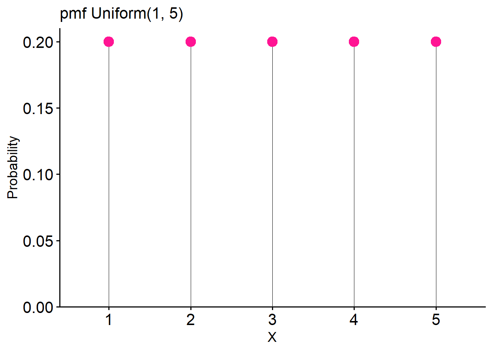
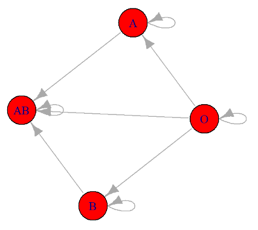
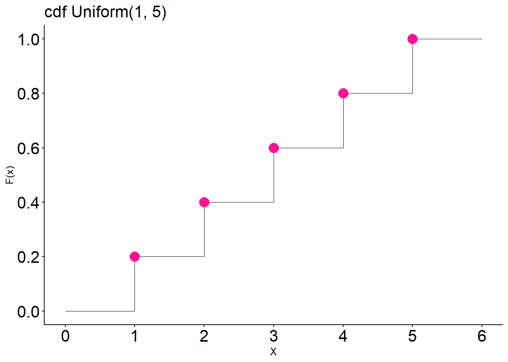

14 Probability distributions
In this chapter, we explore random variables, which assign numerical values to outcomes of random events, with a particular emphasis on the different types of probability distributions. These distributions are broadly classified into two main categories: discrete distributions, such as the binomial and Poisson distributions, in which random variables take on a countable set of values; and continuous distributions, such as the normal and chi-square distributions, in which random variables can assume any value within a continuous range of real numbers.
14.1 Random variables and probability distributions
A random variable assigns a numerical quantity to every possible outcome of a random phenomenon and may be:
- Discrete if it takes either a finite number or an infinite sequence of possible values.
- Continuous if it takes any value in some interval \((\alpha , \beta)\), \(-\infty \leq \alpha < \beta \leq \infty\).
For instance, a random variable representing the ABO blood system (A, B, AB, or O blood type) would be discrete, while a random variable representing the height of a person in centimeters would be continuous.
Example
Let the random variable X represent blood type in population, with the following probabilities: P(A) = 0.41, P(B) = 0.10, P(AB) = 0.04, and P(O) = 0.45.
We assign numerical values to each of the four possible outcomes for the discrete variable X: X = 1 if the person has blood type A, X = 2 for blood type B, X = 3 for blood type AB, and X = 4 for blood type O.
\[X={\begin{cases}1, &for\ blood\ type\ A\\2, &for\ blood\ type\ B\\3, &for\ blood\ type\ AB\\4, &for\ blood\ type\ O\end{cases}}\]
Thus, the probability distribution that describes the probability of different possible outcomes of random variable X is:
\[P(X=x)={\begin{cases}0.41,&for\ x=1\\0.10,&for\ x=2\\0.04,&for\ x=3\\0.45,&for\ x=4\end{cases}}\]
Here, x denotes a specific value (i.e., 1, 2, 3, or 4) of the random variable X. Then, instead of saying P(A) = 0.41, i.e., the blood type is A with probability 0.41, we can say that P(X = 1) = 0.41, i.e., X is equal to 1 with probability of 0.41. Probability distributions are often presented using probability tables, such as Table 14.1.
| Blood type | A | B | AB | O |
| X | 1 | 2 | 3 | 4 |
| P(X) | 0.41 | 0.10 | 0.04 | 0.45 |
Note that the probability axioms and properties that we discussed earlier are also applied to random variables. For example, the total probability for all possible outcomes of a random variable X is equal to one: P(X=1) + P(X=2) + P(X=3) + P(X=4) = 0.41 + 0.10 + 0.04 + 0.45 = 1.
The probability distribution allows us to answer questions like: What is the probability that a randomly selected person from the population can donate blood to someone with type B blood?

It is known that individuals with blood type B or O are eligible to donate to recipients with blood type B (Figure 14.1). Therefore, we need to find the probability P(blood type B OR blood type O). Since having blood type B and blood type O are mutually exclusive events, we can apply the addition rule for mutually exclusive events as follows:
\[ \textrm{P(blood type B OR blood type O)= P(X = 2) + P(X = 4) = 0.10 + 0.45 = 0.55}\]
Hence, there is a 55% probability that a randomly selected individual from our population can donate blood to someone with blood type B.
We will explore different types of probability distributions, broadly categorized into two main groups: discrete and continuous probability distributions. In R, each distribution has four associated built-in functions. The function prefix indicates its type (d for “density”, p for “probability”, q for “quantile”, and r for “random”), while the suffix specifies the distribution. For example, in the case of binomial distribution, these functions are: dbinom(), pbinom(), qbinom(), and rbinom(). Similarly, for the normal distribution, they are: dnorm(), pnorm(), qnorm(), and rnorm().
14.2 Discrete probability distributions
The probability distribution of a discrete random variable X is defined by the probability mass function (pmf) as:
\[ P(X = x) = P(x) \tag{14.1}\]
where:
\(P(X = x)\) is the probability that the random variable X takes the value x and
\(P(x)\) is the probability of the specific outcome x occurring.
The pmf has two properties:
- \(P(x) \geq 0\)
- \(\sum_{x} P(x) = 1\), where x runs through all possible values of the random variable X.
Additionally, the cumulative distribution function (cdf) gives the probability that the random variable X is less than or equal to x and is usually denoted as F(x):
\[ F(x) = P(X \le x)= \sum_{x_i\le x} P(x_i) \tag{14.2}\]
where the sum takes place for all the values \(x_1, x_2, \ldots, x_i\), which are \(x_i\le x\).
When dealing with a random variable, it is common to estimate three key summary measures: the expected value, variance and standard deviation.
Expected Value
The expected value, or mean, denoted as E(X), is defined as the weighted average of the values that X can take. Each possible value \(x_i\) is weighted by its corresponding probability \(P(x_i)\).
\[ \mu = E(X)= \sum\limits_x x_i \cdot P(x_i) \tag{14.3}\]
Variance
We can also define the variance, denoted as \(\sigma^2\), which is a measure of the variability of the X.
\[ \sigma^2=\text{Var}(X)= E[X - E(X)]^2 = E[(X - \mu)^2] = \sum\limits_x\ (x_i-\mu)^2 P(x_i) \tag{14.4}\]
There is an easier form of this formula.
\[ \sigma^2=\text{Var}(X)= E(X^2) - E(X)^2=\sum\limits_x x_i^2 P(x_i)-\mu^2 \tag{14.5}\]
Standard Deviation
The standard deviation is the square root of the variance.
\[ \sigma=\sqrt{\text{Var(X)}}=\sqrt{\sigma^2} \tag{14.6}\]
14.2.1 Discrete uniform distribution
Let X be a discrete random variable that takes integer values within the interval (a, b), where \(a \leq b\), and each integer in this interval is equally likely to occur. The distribution of the variable X follows a discrete uniform distribution, denoted as: \(X \sim \text{Uniform}(a, b)\).
- The probability mass function (pmf) of X is given by:
\[ P(X = x) = \frac{1}{b-a+1} \quad \text{where} \quad x \in \left\lbrace a, a+1, \ldots, b-1, b \right\rbrace \tag{14.7}\]
- The cumulative distribution function (cdf) of X is given by:
\[ F(x) = P(X \le x)= \left\{ \begin{array}{rl} 0 \; , & \text{for} \; x < a \\ \frac{x - a + 1}{b - a + 1} \; , & \text{for} \; a \leq x \leq b \\ 1 \; , & \text{for} \; x > b \; \end{array} \right. \tag{14.8}\]
The expected value of random variable, X, with \(\text{Uniform}(a, b)\) distribution is:
\[ \mu= E(X) =\dfrac{a+b}{2} \tag{14.9}\]
The variance is:
\[ \sigma^2=Var(X) = \frac{(b-a+1)^2 -1}{12} \tag{14.10}\]
and the standard deviation is:
\[ \sigma= \sqrt{Var(X)} = \sqrt{\frac{(b-a+1)^2 -1}{12}} \tag{14.11}\]
Example
A postgraduate program in medicine intends to randomly select one student from a group of five excellent students to receive a scholarship. Given that each student has an equal probability of being chosen, the selection process follows a discrete uniform distribution.
- The pmf for this distribution is (a=1, b=5):
\[P(X = x) = \frac{1}{5-1+1} = \frac{1}{5} = 0.2 \quad \text{where} \quad x \in \left\lbrace 1, 2, 3, 4, 5 \right\rbrace\]
The probability table (Table 14.2) and the distribution visualization (Figure 14.2) are shown below:
| X | 1 | 2 | 3 | 4 | 5 |
| P(X) | 0.2 | 0.2 | 0.2 | 0.2 | 0.2 |
- The cdf for this distribution is:
\[F(x) = P(X \le x)={\begin{cases}0,&for\ x <1\\\frac{x}{5},&for\ 1\leq x \leq 5\\1,&for\ x > 5 \end{cases}}\]
The corresponding plot is shown in Figure 14.3.

The mean is \(\mu= \dfrac{a+b}{2} = \dfrac{5+1}{2}=3\) and the variance is \(\sigma^2 = \dfrac{(b-a+1)^2 -1}{12} = \dfrac{25-1}{12} = 2\).